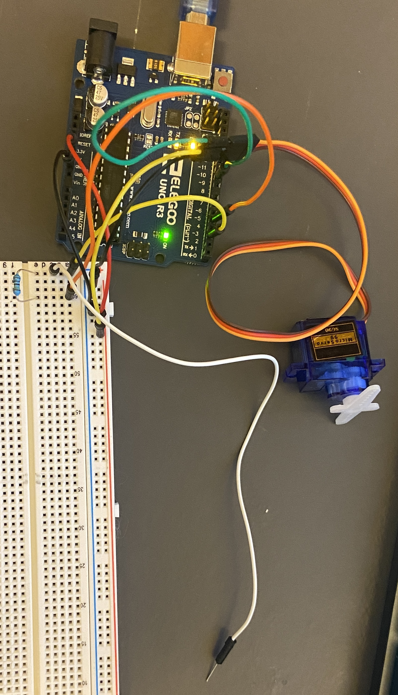
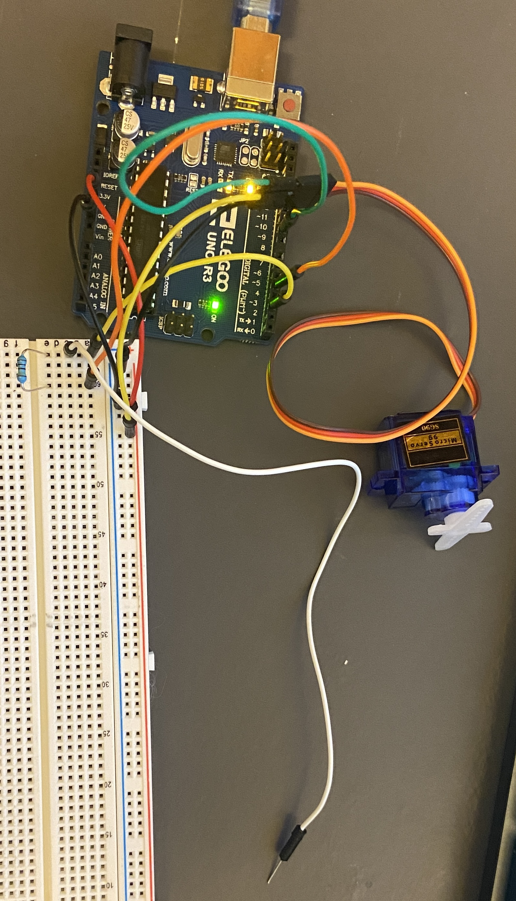
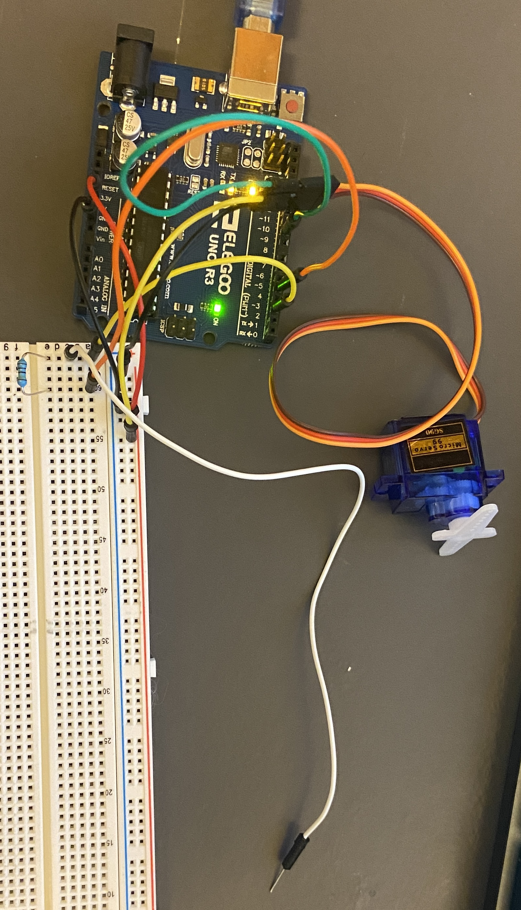
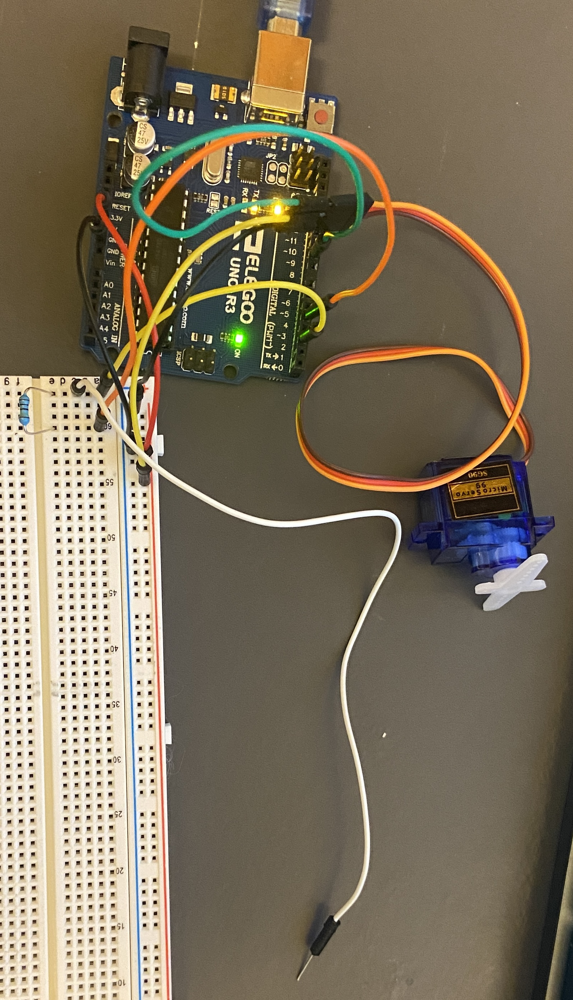

On the left you can see a gif of the assignment working. This is pre calibrated. It starts with my finger off the capacitive sensor(white wire). Then when I put my finger on it, the servo moves.
// Import packages
#include
#include
// Declare Servo
Servo myServo;
CapacitiveSensor cs_4_2 = CapacitiveSensor(4,2); // 1 megohm resistor between pins 4 & 2, pin 2 is sensor pin, add wire, metal thing
// Variables for calibration
int max = 0;
int min = 1023;
long touchValue;
int toMove;
void setup() {
cs_4_2.set_CS_AutocaL_Millis(0xFFFFFFFF); // turn off autocalibrate on channel 1 - just as an example
Serial.begin(9600); // for monitor
myServo.attach(9); // Set servo pin
recalibrate(); // calibrate sensor
}
void loop()
{
//
touchValue = cs_4_2.capacitiveSensor(30); // get value from capacitive sensor
Serial.println(touchValue); // print sensor output 1
delay(10); // arbitrary delay to limit data to serial port
// Map the value so that we can use an easy scale
toMove = map(touchValue, min, max, 0, 10);
// Check if being touched
if (toMove >= 4) {
myServo.write(180); // Rotate counter clockwise
} else {
myServo.write(0); // Rotate clockwise
}
}
// Recalibrates the min and max using data over the next 10 seconds
void recalibrate() {
// loops through 100 times (100ms each time is 10 seconds total)
for (int time = 0; time < 100; time++) {
// Get the current temp from the A0 port
touchValue = cs_4_2.capacitiveSensor(30);
// Check if temp is new max
if (touchValue > max) {
// set min
max = touchValue;
}
// Check if temp is new min
if (touchValue < min) {
// set min
min = touchValue;
}
// wait 100 ms
delay(100);
}
}
I used a 1 mega Ohm resistor because that is what was used in the example in class. We used this so that it is easy to detect when we have given the electrons a better way to groundthemselves. If we wanted to make it more sensitive we could increase the resistor.
1: Say you are using a servo motor you attach to pin 9.
It would look like this because it would only get 5v when moving. Then during the delay there would be no voltage. It does always have current, even when not moving.
2: Your input device is slightly broken, leading it to give us an erroneous reading 1% of the time. How can we address this? Answer in (pseudo)code.
The easiest way to fix this is have it compare the last value to the current value. If the values are very different (indicating a large jump), it is reasonable to believe that it might be a erroneous reading. So in that case we can discard it.
3: Your input device is slightly noisy, leading the measurement to randomly deviate from the true measurement up or down by 10%. How can we address this? Answer in (pseudo)code.
You could address this by averaging out the numbers you get over a set amount of time and using that as the reading. An example could be splitting measurements of 1 second over the course of 10 seconds, during the 1 second you are saving the output to a list. At the end of the second you average the list and use that as the reading for that second. This would prevent the outliars from causing problems.